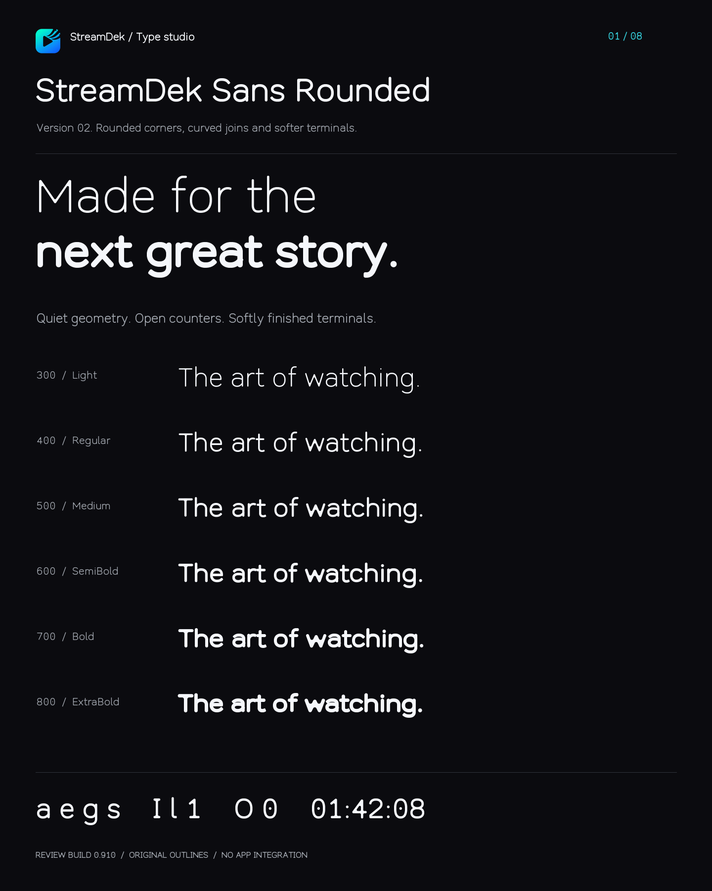
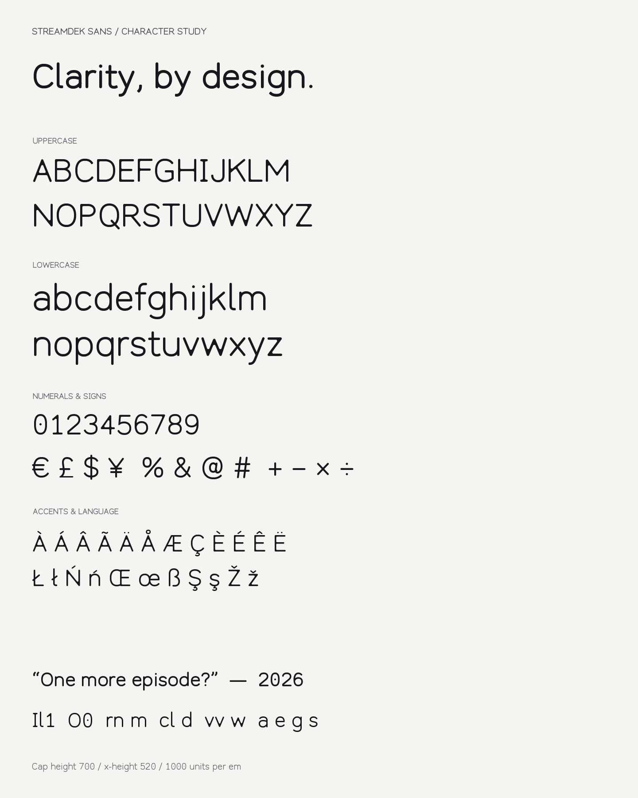
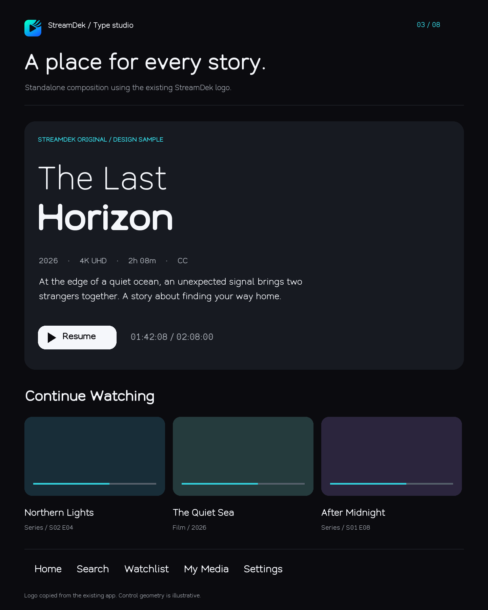
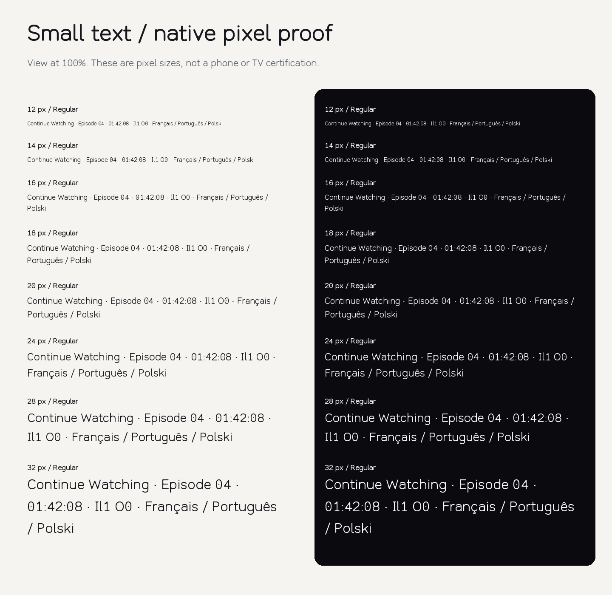
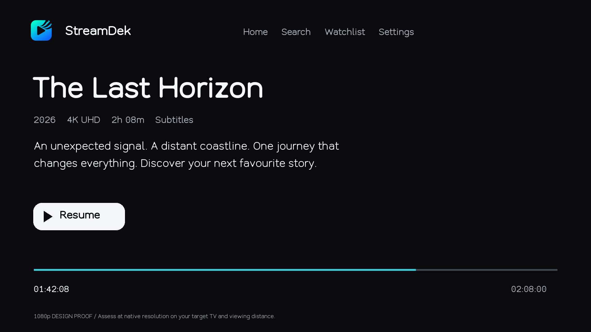
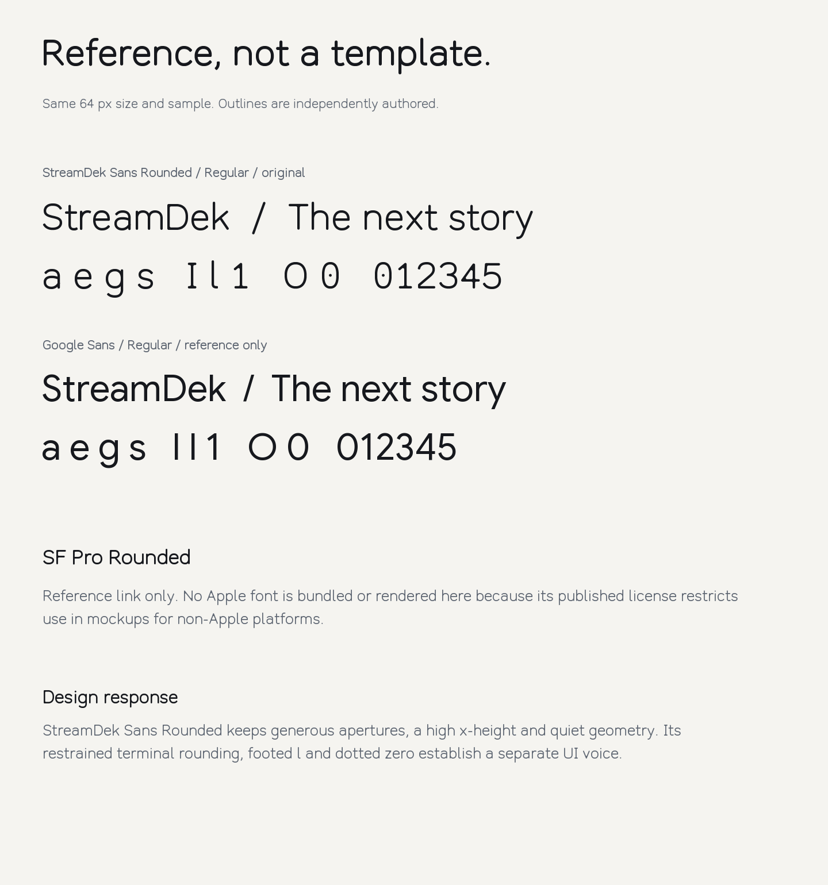
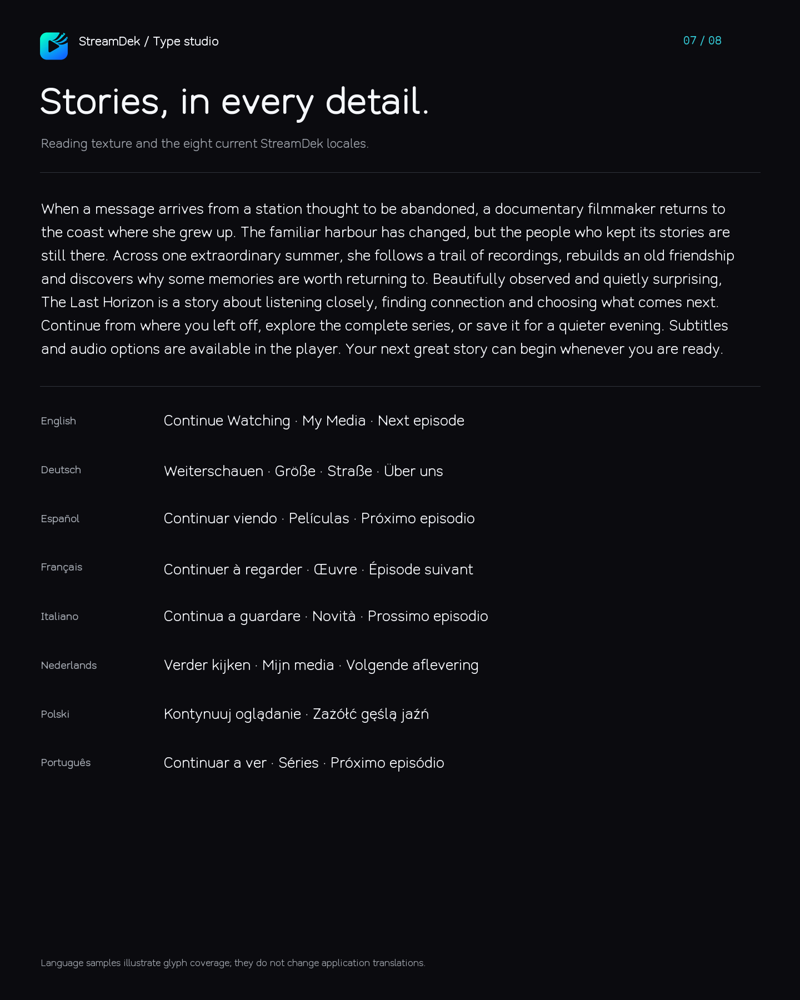
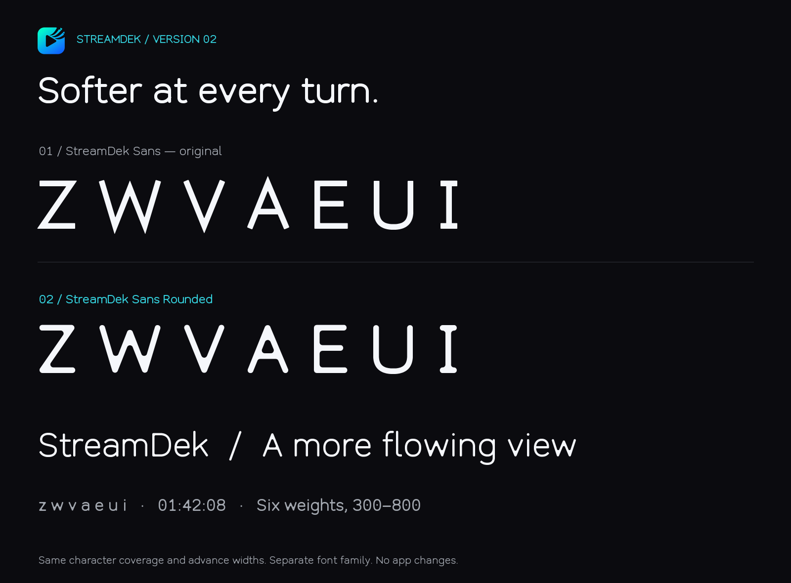

StreamDek / Type studio
StreamDek / Type studio
StreamDek Sans Rounded
Original family · 300–800 · Review build 0.910
Quiet geometry for a world of stories. Six independently generated weights, a continuous weight axis, and softly finished original letterforms.
Make it your own sentence.
Six weights. A consistent voice.
300 / LightThe art of watching.
400 / RegularThe art of watching.
500 / MediumThe art of watching.
600 / SemiBoldThe art of watching.
700 / BoldThe art of watching.
800 / ExtraBoldThe art of watching.
Letters, numbers, detail.
ABCDEFGHIJKLMNOPQRSTUVWXYZ
abcdefghijklmnopqrstuvwxyz
0123456789 / Il1 O0 rn m
ÀÁÂÃÄÅ Æ Ç ÈÉÊË Łł Œœ ß Żż
€ £ $ ¥ © ® ™ … — « » “ ”
Original and rounded.
VERSION 01 / ORIGINALZ W V A E U I
The next story.
VERSION 02 / ROUNDEDZ W V A E U I
The next story.
Google reference
STREAMDEK SANS / REGULARThe next story.
a e g s / Il1 O0
GOOGLE SANS / REGULARThe next story.
a e g s / Il1 O0
Google Sans is included under its OFL license solely as a reference. SF Pro Rounded’s official reference is linked; its font is not bundled or rendered for this non-Apple specimen.
Specimen collection

01 family
02 characters
03 brand preview
04 small sizes
05 tv 1080p
06 reference comparison
07 reading languages
08 original vs rounded